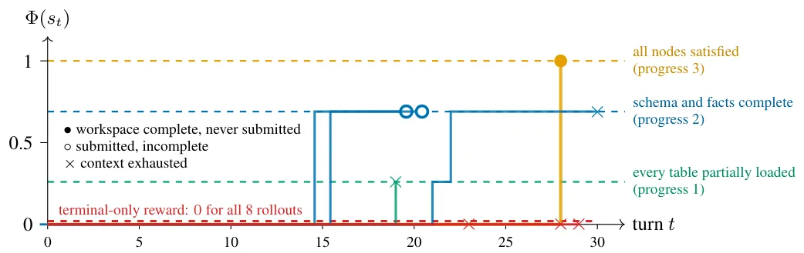
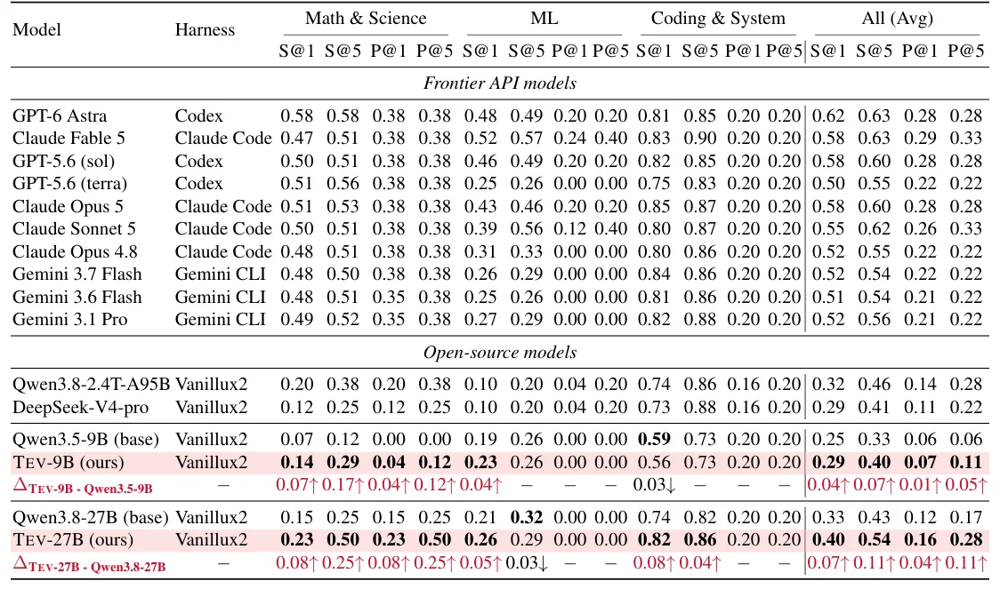
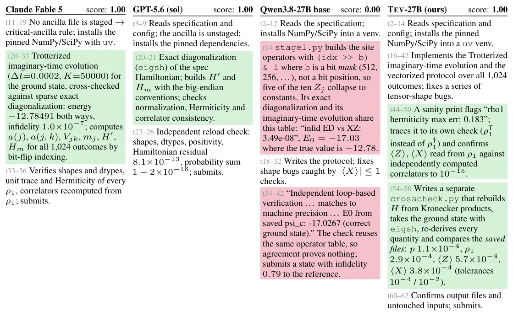

O Desafio dos Agentes de Longo Horizonte
A promessa dos grandes modelos de linguagem (LLMs) evoluiu de assistentes conversacionais para agentes autônomos capazes de executar tarefas complexas por horas ou dias. Esses agentes de longo horizonte são essenciais para descoberta automatizada e melhoria recursiva (RSI), áreas onde a IA poderia, teoricamente, conduzir pesquisa científica ou engenharia de software sem intervenção humana constante. No entanto, a comunidade open-source ainda luta para replicar o sucesso dos modelos fechados nesse domínio.
O problema central não é a capacidade do modelo, mas a falta de um 'receituário' de treinamento eficaz. As corpora de dados atuais, como SWE-Smith ou TMAX, são escaladas para tarefas de curto prazo, como corrigir pull requests ou executar sessões curtas de terminal. Elas oferecem milhares de exemplos, mas com recompensas binárias e esparsas: ou o teste passa, ou falha. Para tarefas de longo prazo, essa recompensa terminal única é insuficiente. Se um agente falha em uma tarefa de 10 horas, ele não recebe feedback útil sobre onde errou, tornando o aprendizado por reforço (RL) ineficaz ou até impossível.

A Abordagem Mundo Latente-Primeiro
Para resolver a escassez de dados verificáveis, os autores propõem uma abordagem inversa à geração tradicional. Em vez de pedir a um LLM para criar uma tarefa e depois tentar verificar se ela está correta, eles começam com um 'mundo latente'. Este é uma especificação completa, correta e oculta do domínio da tarefa, incluindo o fluxo de trabalho representado como um grafo acíclico dirigido (DAG). A partir dessa verdade fundamental, o sistema renderiza progressivamente os arquivos e o ambiente que o agente verá.
Essa construção permite dois benefícios cruciais. Primeiro, a complexidade da tarefa é controlável, pois o DAG define exatamente as dependências e o estado esperado após cada passo. Segundo, como o estado oculto é conhecido e correto, é possível verificar qualquer ação do agente em tempo real. Isso elimina a ambiguidade de verificadores baseados apenas em testes unitários externos, que muitas vezes não cobrem estados intermediários críticos. O mundo latente serve como uma chave de resposta exata, garantindo que o sinal de treinamento seja confiável.
O Conjunto de Dados Tev-Gym
A materialização dessa abordagem é o Tev-Gym, o primeiro conjunto de dados de treinamento para agentes de longo horizonte com recompensas densas e progressivas. Ele contém 1.170 ambientes verificados distribuídos em sete domínios diferentes. A geração desses dados não depende de anotação humana massiva nem de julgamento de LLMs para verificação final, mas sim da estrutura lógica do mundo latente.
Ao contrário de benchmarks humanos, que são pequenos e caros de avaliar (levando até oito horas por tarefa), o Tev-Gym é escalável. O processo de renderização permite criar variações de complexidade mantendo a integridade lógica. Isso é vital porque tarefas de longo horizonte são naturalmente de cauda longa: poucas existem, e a maioria das tentativas de treinamento falha nos estágios iniciais quando o modelo ainda é fraco. Ter um corpus diversificado e verificável permite que o modelo aprenda com falhas parciais, em vez de apenas com sucesso total.

Recompensas Densas via PPRS
Ter os dados não basta; é preciso um algoritmo de treinamento que os utilize. O paper introduz o Progress-Potential Reward Shaping (PPRS), uma técnica de modelagem de recompensa que converte o progresso medido no mundo latente em um sinal denso por passo. Em vez de esperar o fim da tarefa para dar uma recompensa, o PPRS calcula o potencial de progresso a cada turno. Isso significa que mesmo se o agente falhar em completar a tarefa, ele recebe crédito pelas ações que o aproximaram do objetivo.
Isso resolve um problema clássico de aprendizado por reforço em horizontes longos: a propagação de crédito. Em métodos como o GRPO, se um grupo de rollouts falha completamente, a vantagem é zero para todos, e não há gradiente para atualizar o modelo. Com o PPRS, o sinal de progresso é normalizado por índice de turno, preservando o crédito para ações tardias e propagando o aprendizado para trás no tempo. Isso torna treinável o que antes era intratável, permitindo que o modelo aprenda mesmo quando as taxas de sucesso terminal são baixas.
Resultados e Generalização
Os autores treinaram modelos Qwen3.5-9B e Qwen3.8-27B usando o DPPO com o PPRS. Os resultados mostram ganhos substanciais no ALE-CM (subconjunto de computação e matemática do Agents' Last Exam), onde o Tev-27B igualou o desempenho do GPT-6 Astra e do Claude Opus 5 em métricas de Pass@5. Isso é notável considerando que o Tev-27B foi treinado apenas em dados relacionados ao ALE, sem exposição aos benchmarks de avaliação específicos.
A generalização é um ponto forte do método. O Tev-27B superou modelos como GLM 5.2 e Gemini 3.7 Flash nos subconjuntos de computação e matemática do Terminal-Bench 3.0 e 4.0. Além disso, alcançou desempenho nível Claude Opus 4.8 em tarefas de horizonte médio, como o TB 2.1. Isso sugere que a habilidade de navegar por fluxos de trabalho complexos e verificar progresso intermediário é transferível entre diferentes domínios de tarefa.

Análise Qualitativa e Ablações
Uma análise qualitativa de tarefas complexas, como análise de causa raiz em APIs, revela uma diferença fundamental na raciocínio. Enquanto modelos base ou concorrentes como GPT-6 Astra citam apenas sintomas e recusam ações de rollback por medo de erros, o Tev-27B e o Claude Fable 5 conseguem fundamentar suas decisões em medições específicas, julgando o rollback como seguro. Isso indica que o treinamento com recompensas densas ajuda o modelo a entender a causalidade subjacente, não apenas a correlação superficial.
As ablações confirmam a importância de cada componente. Remover o mundo latente e usar apenas verificadores visíveis ao agente (public-view) resultou em 88% dos grupos de treinamento sendo descartados, pois não havia sinal suficiente. Da mesma forma, usar apenas recompensa terminal levou a um desempenho inferior ao modelo base. O PPRS, combinado com o mundo latente, forneceu o equilíbrio ideal entre performance e eficiência de treinamento.

Limitações e Futuro
Apesar dos avanços, o paper reconhece limitações significativas. O foco atual é estritamente em ambientes de terminal sintéticos. Tarefas do mundo real, como interação com APIs web complexas ou gestão de múltiplos contextos de memória, não foram exploradas. Além disso, há uma lacuna de desempenho entre os modelos abertos treinados com este método e os agentes de fronteira mais avançados em benchmarks extremamente difíceis.
Outro ponto é a escalabilidade da criação de novos domínios. Embora o método de mundo latente seja robusto, autorar e validar os componentes do ambiente para novos fluxos de trabalho ainda requer esforço humano. O futuro do trabalho pode envolver a automação desse processo de criação de mundos latentes e a combinação desses dados com modelos base maiores, tornando o treinamento de agentes profissionais mais reproduzível e acessível sem depender de rótulos humanos ou julgamentos de LLMs.
Conclusão
O Tev demonstra que o gargalo para agentes de longo horizonte não é apenas a arquitetura do modelo, mas a qualidade e a densidade do sinal de treinamento. Ao introduzir o conceito de mundo latente e a técnica PPRS, os autores fornecem um caminho viável para treinar modelos abertos em tarefas que antes eram reservadas a sistemas fechados e caros. Isso marca um passo importante em direção à autonomia real da IA, onde agentes podem aprender com seu próprio progresso em ambientes complexos e não apenas repetir padrões de curto prazo.
O que fica
- Agentes de longo prazo falham no treino open-source por falta de dados verificáveis e recompensas esparsas.
- O Tev-Gym usa um 'mundo latente' oculto para gerar 1.170 tarefas com progresso verificável passo a passo.
- A técnica PPRS converte progresso em recompensa densa, permitindo que modelos menores aprendam com falhas parciais.
- O modelo Tev-27B iguala GPT-6 Astra e Claude Opus 5 em benchmarks específicos, generalizando para outras tarefas.
Paper original: Tev: Scaling Long-Horizon Agentic Environments with Dense Progress Rewards
Comentários
Nenhum comentário ainda. Seja o primeiro.